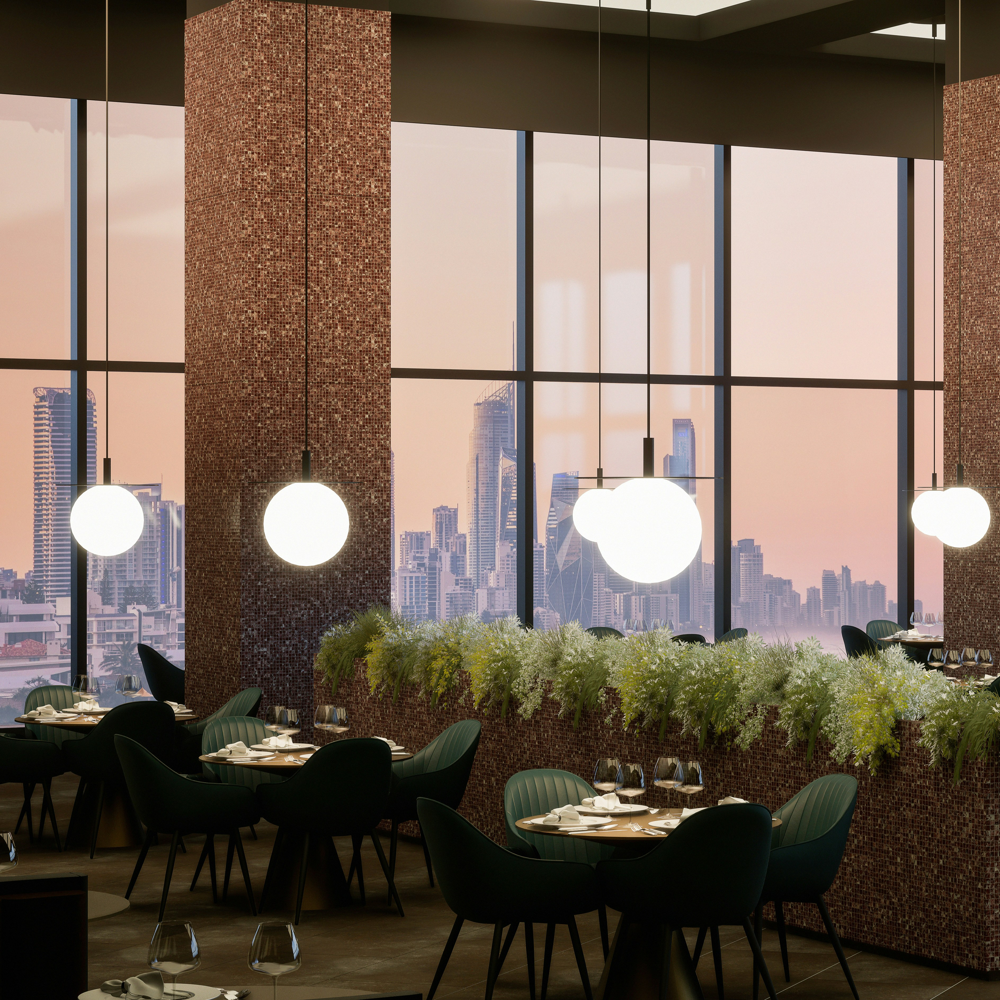

Ember Oak
Modern Australian
Ember Oak brings fire-kissed contemporary Australian cuisine to the heart of the city. Think dry-aged steaks, wood-roasted seasonal vegetables and a wine list that champions small Victorian producers. The intimate dining room with all dark timbers and candlelight which makes it ideal for a special occasion or an important business dinner.
Signature Dishes
- Dry-Aged Wagyu Sirloin $82
- Wood-Roasted Rack of Lamb $68
- Charred Cauliflower Steak (V) $34